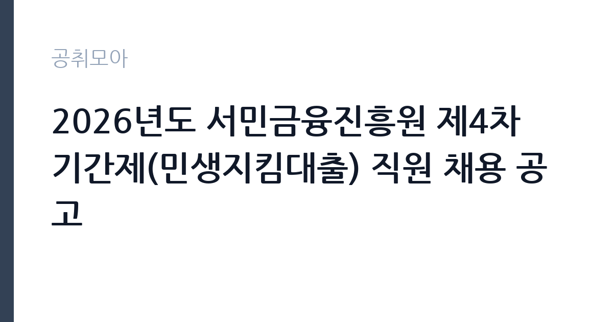

[공공기관] 2026년도 서민금융진흥원 제4차 기간제(민생지킴대출) 직원 채용 공고
서민금융진흥원 · 서울 · 마감 2026-11-12 (D-14) · 출처 잡알리오

한눈에 보는 모집 조건
| 기관 | 서민금융진흥원 |
|---|---|
| 공고명 | 2026년도 서민금융진흥원 제4차 기간제(민생지킴대출) 직원 채용 공고 |
| 고용형태 | 기간제 |
| 근무지 | 서울 |
| 게시일 | 2026-10-29 |
| 마감일 | 2026-11-12 (D-14) |
지원자격, 이렇게 읽으세요
- 단, 현역 군장병의 경우 임용일('26.12.23.)부터 즉시 근무 가능한 자
- 채용 확정 후 채용예정일로부터 즉시 근무 가능한 자(입사유예 불가)
기간제 근로자는 근로계약 기간이 정해진 신분입니다. 계약 기간과 갱신 가능 여부가 근로계약서에 명시되며 기간 만료 시 근로관계가 종료됩니다. 결원 보충이나 특정 사업 기간에 맞춰 채용되는 경우가 많아 업무 범위가 명확합니다. 이번 공고는 서민금융진흥원에서 직접 진행하는 자체 전형으로, 응시자격과 제출서류는 공고문에 항목별로 제시됩니다. 금융·투자 직무는 관련 자격과 경력이 기준입니다. 공인회계사, CFA, 투자자산운용사 같은 자격을 우대하거나 요구하며, 실무 경력 연수를 명시하는 경우가 많습니다. 계약직은 계약 기간과 연봉이 개별로 정해집니다. 이해충돌 방지와 겸직 제한 규정이 엄격하게 적용됩니다. 경력은 담당 자산 규모와 함께 증빙해야 합니다. 서류는 접수 마감 이후 보완이 되지 않으므로 자격 요건과 증빙 서류를 마감 전에 모두 갖춰야 합니다. 공고문에 명시된 우대 사항은 해당 여부를 확인해 증빙을 첨부해야 가점이 반영됩니다. 학력이나 전공 요건이 없는 공고라도 제출서류 목록은 그대로 적용되므로 서류 준비 부담은 줄지 않습니다. 이 공고 원문에 적힌 응시 조건 문구는 '학력, 전공, 성별, 연령* 등 제한 없음'입니다. 문구를 그대로 읽고 본인 해당 여부를 하나씩 표시해 두면 서류 단계에서 탈락하는 일을 줄일 수 있습니다.
이 공고의 포인트
이 공고의 첫 번째 포인트는 고용 형태입니다. 계약 기간이 정해져 있어 근무 종료 시점이 명확합니다. 그만큼 짧은 기간에 어떤 실적을 남길지가 중요해집니다. 두 번째는 업무 범위가 명확하다는 점입니다. 금융·투자 전문직 직무로 채용되므로 배치 이후 담당 업무가 크게 흔들리지 않습니다. 세 번째는 근무지입니다. 서울 지역 근무로 접근성은 좋지만 그만큼 지원자가 몰리는 지역이므로 경쟁률을 넉넉히 잡아야 합니다. 재공고로 올라온 공고라 이전 차수 지원자와의 형평성 기준을 확인할 필요가 있습니다. 선발 인원은 공고문에 명시되어 있으니 모집분야 항목을 함께 확인하십시오.
전형은 어떻게 진행되나
채용 절차는 공고문에 안내된 순서대로 진행되며, 서류 접수 마감 후에는 추가 접수나 서류 보완이 이뤄지지 않는 것이 원칙입니다. 서류심사에서는 응시자격과 제출서류의 형식 요건을 기계적으로 확인하므로, 경력 증명서의 기간과 직무 내용이 공고의 요건과 정확히 맞아야 합니다. 면접은 지원자 수에 따라 집단면접과 개별면접으로 나뉘고, 직무 관련 질문과 상황 대응 질문이 함께 나옵니다. 합격자 발표는 개별 통보 또는 홈페이지 게시로 이뤄지며 이후 임용 절차가 진행됩니다. 결과 발표는 문자와 이메일로 동시에 이뤄지지 않는 경우가 있어 두 경로를 모두 확인하십시오.
원문에서 확인한 전형 방식
<공통 자격> ㅇ 학력, 전공, 성별, 연령* 등 제한 없음 * 서금원 정년(만60세)을 고려하여 채용예정일(‘26.12.23.) 기준 만 60세 이상인 자는 지원 불가 ㅇ 해외여행에 결격사유가 없는 자 ㅇ 남자의 경우 병역필 또는 면제자 - 단, 현역 군장병의 경우 임용일('26.12.23.)부터 즉시 근무 가능한 자 ㅇ 채용 확정 후 채용예정일로부터 즉시 근무 가능한 자(입사유예 불가) ㅇ「국가공무원법」제33조 및 서민금융진흥원 내규에 의한 채용 결격사유가 없는 자
이런 분께 추천해요
- 금융·투자 분야 자격과 실무 경력을 갖춘 분
- 재무 분석과 보고서 작성에 강점이 있는 분
- 이해충돌 방지 규정을 엄격히 준수할 수 있는 분
지원 전 체크리스트
- 응시자격 요건과 경력 기준을 충족하는가 — 경력은 증명서로 입증해야 합니다
- 계약 기간과 근무 시작일·종료일을 확인했는가
- 제출서류 목록을 모두 준비했는가 — 누락 시 서류 단계에서 탈락합니다
- 접수 마감 2026-11-12 이전에 접수 방식을 확인해 제출했는가
모집 일정과 제출 타이밍
접수 마감은 2026-11-12이고 공고는 2026-10-29에 게시되었습니다. 준비 기간 14일 안에 서류 작성, 증빙 발급, 접수를 모두 마쳐야 하므로 주말을 포함해 일정을 미리 나누는 것이 좋습니다. 특히 경력 기술서나 직무수행계획서를 요구하는 공고는 작성에 시간이 걸리므로 첫날 초안을 잡으십시오. 서류 합격자 발표와 면접 사이 간격이 짧은 경우가 많아 면접 예상 질문은 서류 제출 전에 정리해 두는 편이 유리합니다. 마감 직전에는 접속이 몰리므로 여유를 두고 제출하십시오. 서류 발표일과 면접일 사이가 짧은 경우가 많아 면접 준비는 접수와 동시에 시작하는 편이 좋습니다. 서울 근무지는 대중교통 접근성이 좋은 대신 주차와 통근 시간이 변수입니다. 출퇴근 경로를 미리 확인하십시오. 마감까지 2주 안팎이 있어 준비할 시간은 있지만 미루면 촉박해집니다. 선발 인원은 공고문의 모집분야 항목에 직종별로 제시되어 있습니다.
직무 이해하기: 공공기관
연구·교육 지원 기관은 정책 연구와 조사 분석, 교육 프로그램 운영을 담당합니다. 과제 기반으로 인력을 채용하는 경우가 많아 계약 기간과 성과 목표가 명확히 정해집니다. 보고서와 연구 성과물의 품질 기준이 높습니다. 금융·투자 업무는 기관 자산을 운용하고 투자 대상을 검토하는 일입니다. 투자 제안서와 재무 자료를 분석해 수익성과 위험을 평가하고, 내부 심의에 필요한 보고서를 작성합니다. 계약과 정산 과정을 관리하고 운용 성과를 정기적으로 점검합니다. 관련 법규와 내부 지침을 함께 적용해야 하므로 규정 이해가 필수입니다. 계약직으로 채용되면 담당 펀드나 자산군이 정해집니다. 업무는 혼자 처리하기보다 부서 단위로 나눠 진행되므로 담당 구역과 협업 범위를 입사 초에 확인하는 것이 중요합니다. 업무 강도와 근무 시간대는 부서 배치에 따라 달라지므로 면접에서 확인하는 것이 가장 정확합니다.
자기소개서 작성 팁
금융·투자 지원서는 딜 단위의 실적을 정리하는 것이 가장 설득력 있습니다. 담당 자산 규모, 검토 건수, 수익률과 위험 관리 방식이 소재입니다. 기관의 자산 운용 방향과 본인 경험을 연결하면 준비도가 드러납니다. 규정 준수와 윤리 의식을 별도 문단으로 다루십시오. 구성은 지원 동기, 직무 경험, 기여 방안 순서가 무난합니다. 지원 동기는 서민금융진흥원의 사업 중 본인이 관심을 가진 부분을 한 가지로 좁혀 서술하고 추상적인 표현은 줄이십시오. 직무 경험은 담당했던 업무와 규모, 결과를 수치로 제시하면 설득력이 올라갑니다. 기여 방안은 입사 후 첫 3개월과 1년 계획으로 나눠 쓰면 준비도가 드러납니다.
면접 준비 포인트
면접에서는 투자 판단 과정과 위험 관리 방식을 확인합니다. 검토했던 딜의 구조와 판단 근거, 손실이 발생한 사례에서 어떻게 대응했는지 묻습니다. 규정 준수와 이해충돌 관리에 대한 인식도 평가 대상입니다. 숫자를 근거로 답변을 구성하는 것이 효과적입니다. 답변은 상황, 판단, 조치의 순서로 정리하면 전달이 분명해집니다. 모르는 질문에는 모른다고 밝히고 확인 방법을 제시하는 편이 억지 답변보다 낫습니다. 마지막에는 근무 의사와 함께 2026-11-12 이후 일정에 언제든 응할 수 있다는 점을 전달하십시오. 직무 특성상 체력이나 근무 시간에 대한 질문이 나올 수 있으므로 솔직하게 답하고 관리 계획을 함께 제시하십시오.
급여·근무조건 읽는 법
알리오(공공기관 경영정보 공개시스템) 2025년 결산 경영공시 기준으로 서민금융진흥원 일반정규직 1인당 평균보수액은 7,030만원, 공시된 신입사원 초임은 4,322만원입니다. 무기계약직 1인당 평균보수액은 4,109만원으로 공시되어 정규직과 차이가 납니다. 평균보수액은 기본급에 고정수당·실적수당·성과상여금·급여성 복리후생비를 모두 합산한 값이라 월 기본급만 보고 판단하면 실제와 크게 어긋납니다. 이번 공고는 기간제 채용이라 위 정규직 평균보수는 그대로 적용되지 않습니다. 기간제 보수는 기관의 기간제 임금 기준을 따르며 계약 기간이 함께 정해집니다. 금융·투자 전문계약직의 보수는 연봉 총액으로 정해지며, 경력과 담당 자산 규모에 따라 차이가 큽니다. 성과급과 인센티브 포함 여부를 반드시 확인해야 합니다. 계약 기간과 연장 조건, 겸직 제한 조항은 공고문에 명시되어 있으므로 원문에서 확인하십시오. 2026년 적용 최저임금은 시급 10,320원, 월 환산 2,156,880원(주 40시간·209시간 기준)입니다. 고용노동부 고시 제2025-47호로 확정된 금액입니다. 공고문에 금액이 제시되지 않은 항목은 원문 보수표나 처우 설명에서 확인해야 하며 확인되지 않은 수치는 쓰지 않는 것이 원칙입니다. 비교할 때는 월 급여뿐 아니라 상여·명절휴가비·복지포인트·초과근무수당까지 포함한 연간 총액으로 계산하십시오. 기간제라면 계약 기간 동안의 총액을, 무기계약이라면 호봉 상승과 정년까지의 누적 소득을 기준으로 판단하는 편이 정확합니다.
자주 묻는 질문
- 선발 인원은 몇 명인가요?
공고문의 모집분야 항목에 직종별 인원이 표로 제시되어 있습니다. 첨부된 공고문 원문에서 확인하십시오. - 근무지는 어디인가요?
서울 지역의 서민금융진흥원 소속 근무지입니다. 세부 주소와 출퇴근 조건은 원문 공고문에서 확인할 수 있습니다. - 보수는 얼마인가요?
채용 신분(기간제)과 기관 임금 규정에 따라 정해지며 구체적인 금액은 공고문 처우 항목에 제시됩니다. 금액이 공개되지 않은 경우에는 원문의 보수표를 확인하십시오.
함께 보면 좋은 공고
[공공기관] 2026년 (재)한국에너지재단 제2차 기간제 채용 공고(채용 제2026-06호) — 마감 2026-11-13[공공기관] 한국고전번역원 2026년 4분기 제2차 직원 신규 채용 — 마감 2026-11-05[공공기관] 계약직 연구원/행정(전북응급의료지원센터) 채용 재공고 — 마감 2026-11-09출처: 잡알리오 공개정보를 바탕으로 공취모아가 정리한 안내글입니다. 모집 조건·일정은 변경될 수 있으니 지원 전 반드시 원문 공고문을 확인하세요. 본 글은 정보 제공용이며 합격을 보장하지 않습니다.